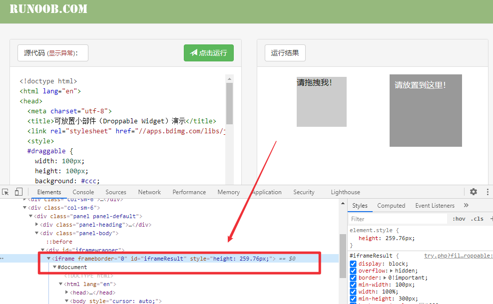
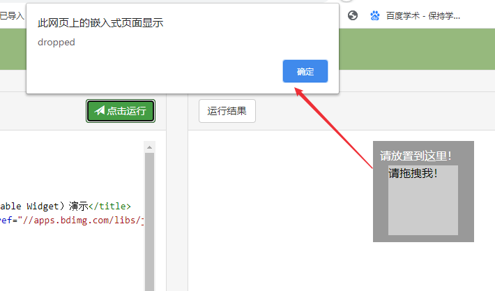

在web应用自动化测试中，点击一个链接或者按钮会打开一个新的浏览器窗口，会出现多个窗口实例。默认情况下的焦点在主窗口（父窗口），如果要对子窗口进行操作，就需要首先切换到子窗口。
Selenium WebDriver给每个窗口指定了一个唯一的ID，Selenium通过这个唯一ID实现在多个窗口之间切换。常见的有iframe，弹出对话框alert，新窗口等。本文将介绍这几种窗口的切换。
iframe切换
在web自动化中，如果一个元素定位始终不到，如果locator没有写错，很大概率就是这个元素在iframe中。
什么是frame？
frame是html中的框架，通过使用frameset 标签将页面进行垂直或者水平分离。包含frameset、frame、 iframe三种标签。
演示代码：https://www.w3school.com.cn/tiy/t.asp?f=html_frame_cols
frame切换
切换到frame或者iframe后就可以进行操作，操作完成后需要切换回原来的框架：
1
2
3
| driver.switch_to.frame()
driver.switch_to.default_content()
driver.switch_to.parent_frame()
|
多 frame切换
测试页面：https://www.runoob.com/try/try.php?filename=jqueryui-api-droppable
切换iframe，打印’请拖拽我’元素文本

1
2
3
4
5
6
7
| def test_iframe(self):
self.driver.get("https://www.runoob.com/try/try.php?filename=jqueryui-api-droppable")
self.driver.switch_to.frame("iframeResult")
print(self.driver.find_element_by_id("draggable").text)
self.driver.switch_to.default_content()
print(self.driver.find_element_by_id("submitBTN").text)
|
弹出对话框alert切换
在页面操作时会遇到 JavaScript所生成的alert、 confirm以及prompt弹框，需要对弹框操作后才能进行下一步。
操作alert常用的方法
- switch_to.alert()：切换到当前页面上的警告框
- text：返回弹框文本信息
- accept()：接受弹框，确认
- dismiss()：取消弹框
- send_keys(keysToSend)：发送文本至弹框
alert切换
测试页面还是上面的页面，拖拽后会出现一个弹框，我们打印弹框内容并点击确定。

python代码：
1
2
3
4
5
6
7
8
9
10
11
12
13
14
15
| def test_alert(self):
self.driver.get("https://www.runoob.com/try/try.php?filename=jqueryui-api-droppable")
self.driver.switch_to.frame("iframeResult")
drag = self.driver.find_element_by_id("draggable")
drop = self.driver.find_element_by_id("droppable")
action = ActionChains(self.driver)
action.drag_and_drop(drag, drop).perform()
sleep(2)
alert = self.driver.switch_to.alert
print(alert.text)
alert.accept()
self.driver.switch_to.default_content()
self.driver.find_element_by_id("submitBTN").click()
sleep(3)
|
多窗口切换
有时候点击某些链接会打开一个新的窗口，需要先切换窗口才能在新页面上操作。selenium通过切换窗口句柄来进行多个窗口之间的切换。
处理流程
- 获取当前的窗口句柄(driver.current_window_handle)
- 获取当前会话下的所有窗口句柄(driver.window_handles)
- 切换窗口(driver.switch_to_window)
- 切回原窗口(driver.switch_to_window)
多窗口切换
1、打开百度，点击登录，进入注册界面，返回登录页
python代码：
1
2
3
4
5
6
7
8
9
10
11
12
13
14
15
16
| def test_window(self):
self.driver.get("http://www.baidu.com")
self.driver.find_element_by_link_text("登录").click()
self. driver.find_element_by_link_text("立即注册").click()
windows = self.driver.window_handles
self.driver.switch_to.window(windows[-1])
self.driver.find_element_by_id("TANGRAM__PSP_4__userName").send_keys("username")
self.driver.find_element_by_id("TANGRAM__PSP_4__phone").send_keys("12345678")
sleep(2)
self.driver.switch_to.window(windows[0])
self.driver.find_element_by_id("TANGRAM__PSP_10__footerULoginBtn").click()
|
2、打开新窗口
1
2
3
4
5
6
7
8
9
10
11
12
13
14
15
16
| def test_window2(self):
self.driver.get("http://www.baidu.com")
js = "window.open('http://www.sogou.com')"
self.driver.execute_script(js)
sleep(3)
windows = self.driver.window_handles
print(windows)
self.driver.switch_to.window(windows[-1])
self.driver.find_element_by_id("query").send_keys("test sogou")
sleep(3)
self.driver.close()
self.driver.switch_to.window(windows[0])
self.driver.find_element_by_id("kw").send_keys("test baidu")
sleep(3)
|
获取当前焦点元素
switch_to还有一个方法叫switch_to.active_element，返回当前焦点的WebElement对象，用于判断当前焦点是否位于某个web元素。有时候需要测试打开一个网页，焦点是否在输入框，比如账号密码登录页面。
测试：打开https://www.baidu.com/，焦点在输入框
python代码：
1
2
3
4
| def test_element_focus(self):
self.driver.get("https://www.baidu.com/")
baidu = self.driver.find_element_by_id("kw")
assert baidu == self.driver.switch_to.active_element
|